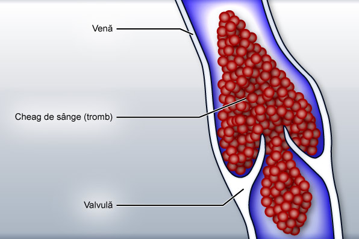

-
1. COAGULAREA INTRAVASCULARĂ DISEMINATĂ (CIVD, CID) Coagularea intravasculară diseminată (CIVD sau CID), numită şi coagulopatie de consum, reprezintă o perturbare a coagulării sângelui (coagulopatie), care se caracterizează prin formarea sau extinderea reţelei de fibrină, în afara hemostazei, urmată de o distrugere accentuată a acestei reţele, ca o consecinţă a consumului cvasi-general de factori procoagulanţi. Cu alte cuvinte, coagularea vasculară diseminată (CIVD), apare atunci când cheagul de sânge se formează spontan (în lipsa unor leziuni care să producă hemoragii), în anumite puncte din interiorul vaselor sanguine. Formarea acestor cheaguri conduce cu sine la epuizarea substanţelor implicate în coagulare, având loc, în etapa următoare, reversul procesului, care se manifestă prin apariţia unor hemoragii (hipercoagulabilitatea este urmată de hipocoagulabilitate).
1.1.Cum se instalează coagularea intravasculară diseminată? În coagularea intravasculară diseminată se formează cheaguri de sânge mici în interiorul unor vase de sânge, de obicei arteriole, venule sau capilare. În cazul vaselor mici de sânge, poate avea loc (nu este obligatoriu) o obturare a acestora, rezultând încetinirea sau suprimarea circulaţiei sanguine locale, fenomen ce poate evolua mai departe spre instalarea unor necroze.
 Atunci când tromboza (astuparea unui vas de sânge) se formează în puncte vitale, se pot produce afecţiuni grave (trombo-embolism pulmonar, accident vascular cerebral (AVC) trombotic cerebral, ischemie cardiacă cu risc crescut de infarct), care pun viaţa în pericol. În coagularea intravasculară diseminată accelerarea procesului de coagulare se asociază, în compensare, cu o activarea excesivă concomitentă a fibrinolizei, rezultând hemoragii.
-
2. HIPERGLICEMIA Hiperglicemia este o stare trecătoare sau de lungă durată, caracterizată prin creşterea glicemiei peste valorile normale. Când în sânge glucoza depăşeşte concentraţia de 125 mg de glucoză la 100 ml, înseamnă că s-a instalat hiperglicemia. Ca şi în cazul tensiunii arteriale, nu numai situaţiile de hiper sau de hipo trebuiesc analizate, ci şi cel oscilante, care au, se pare, o conotaţie mai specială.
2.1.Cauze, efecte Hiperglicemia trecătoare apare în febră, consum de dulciuri sau panificabile, hipoxie, asfixie, intoxicaţii, stres. Hiperglicemiile temporare sunt fireşti după mese, mai ales dacă acestea au fost bogate în glucide, fiind numite hiperglicemii postprandiale. Creşterea patologică a nivelului glicemiei apare atunci când pancreasul nu mai poate produce destulă insulină (diabet). Există şi alte cauze, mai puţin grave, cum ar fi prezenţa în exces a unor hormoni hiperglicemianţi (hipofizari, tiroidieni, suprarenali). Hiperglicemia, prin ea însăşi, faţă de hipoglicemie, nu provoacă, de obicei, nici un simptom. La unele persoane pot să apară semne şterse, care se exteriorizează prin oboseală şi somnolenţă. Însă indirect, prin modificările metabolice produse, creşterea glicemiei peste valorile normale, dacă persistă, poate aduce o serie de simptome, ca: diureză crescută, apetit exagerat, nevoie exagerată de lichide, miros de mere stricate a respiraţiei, tulburări de vedere, senzaţie de oboseală. Aceste semne apar cu o intensitate mai mult sau mai puţin accentuată, fiind după cum am mai arătat, simptome indirecte, de rezonanţă, ale creşterii mai îndelungate ale nivelului glucozei în sânge. Din acest motiv, cele mai multe boli cronice cu hiperglicemie, între care diabetul ocupă principalul loc, se descoperă întâmplător, atunci când se face o analiză a sângelui. Dacă hiperglicemia este destul de accentuată (mai mare de 250mg/100ml), glucoza este eliminată din sânge prin rinichi, ceea ce însemnă că urina conţine glucoză (glucozurie). În cazul în care glicemia creşte brusc, urmând imediat o scădere a ei la fel de rapidă până la nivelul optim, se pot instala fenomene şi simptome asemănătoare hipoglicemiei.
-
3. HIPOGLICEMIA Hipoglicemia deşi nu este o afecţiune propriu-zisă (este un simptom sau cel mai des o asociere semne - sindrom), îmbracă un tablou destul de carcteristic şi complex. Hipoglicemia este determinată de scăderea concentraţiei glucozei din sânge sub valoarea de 65mg/100ml.
3.1. Cauze, manifestări Hipoglicemia apare în inaniţie, în carenţele glucidice, în urma unui efort fizic, intelectual sau emoţional deosebit (hiperutilizare de glucoză), în unele afecţiuni hepatice - când producţia hepatică de glucoză sau de glicogen este alterată, în urma tratamentelor cu principii hipoglicemiante farmaceutice (insulină, sulfamide hipoglicemiante), după consumul de alcool, în urma unor intervenţii chirurgicale (rezecţii gastro-intestinale), din motive endocrine nonpancreatice (hiperfuncţii ale tiroidei, hipofizei sau ale suprarenalelor) sau în alte situaţiile în care glicemia prezintă oscilaţii mari. În ceea ce priveşte pancreasul endocrin, hipoglicemia se întâlneşte frecvent în hiperinsulinism funcţional (ocazional şi reversibil pancreasul secretă mai multă insulină), lezional (cauzat de o tumoră sau adenom), hiperplazic (are loc o creştere anormală de celule β ori de insulele Langenhans în pancreas) sau iatrogen (după administrarea de insulină). Hiperinsulinismul funcţional apare frecvent în stările prediabetice ale obezilor (Ionescu şi Dumitrache).
3.2. Formele şi gradele hipoglicemiei Deoarece scăderea nivelului glucozei din sânge se însoţeşte cu un complex de simptome, mulţi autor consideră că hipoglicemia nu reprezintă doar un efect carenţial, ci se constituie într-un adevărat sindrom (sindrom hipoglicemic). După Ionescu şi Dumitrache, sindromul hipoglicemic se manifestă insidios sau brusc, prin forme uşoare, medii şi grave, după cum se poate vedea mai jos.

De cele mai multe ori, hipoglicemia cauzată de hiperinsulinism funcţional, prezintă forme uşoare, care pot evolua uneori, însă treptat, spre cele medii sau chiar grave, dacă nu se administrează în timp util glucoză. În hiperinsulinismul lezionar, manifestările hipoglicemice sunt grave, complet imprevizibile, bruşte. După timpul de instalare şi periodicitatea crizelor, hipoglicemia poate fi:
- - bruscă sau rapidă (se instalează repede, manifestându-se acut)
- - lentă cu tendinţă cronică (apare şi evoluează treptat, la 2- 4 ore după masă, din diferite motive care intervin în absorbţia intestinală a glucidelor - rezecţii gastro-intestinale, deficite enzimatice, tranzit gastro-intestinal prea rapid, etc.).